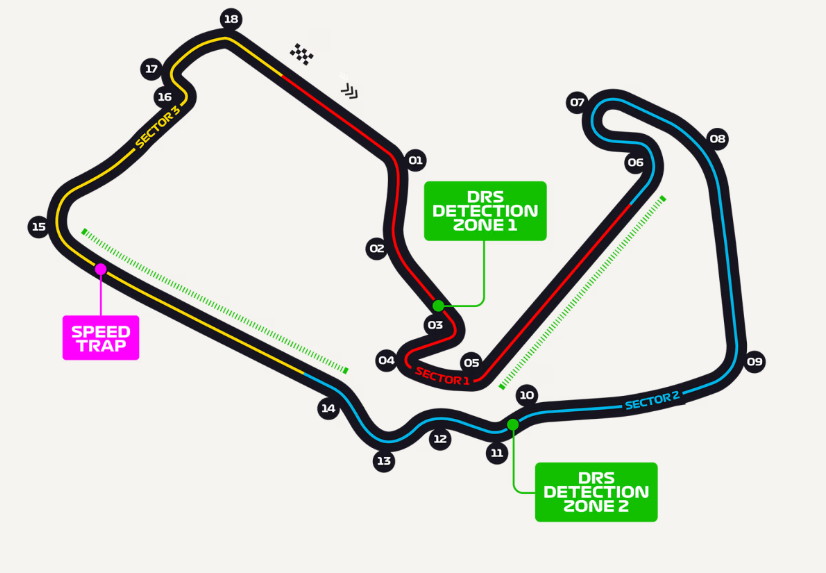
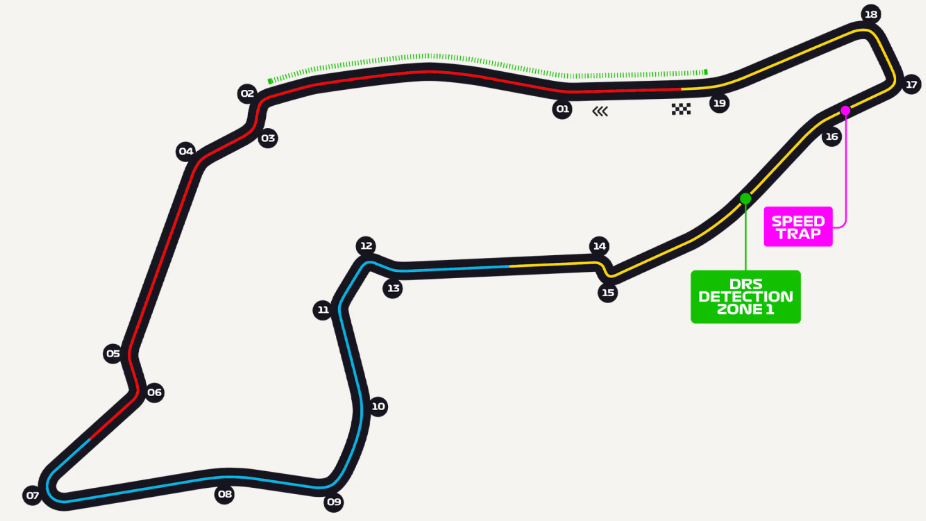
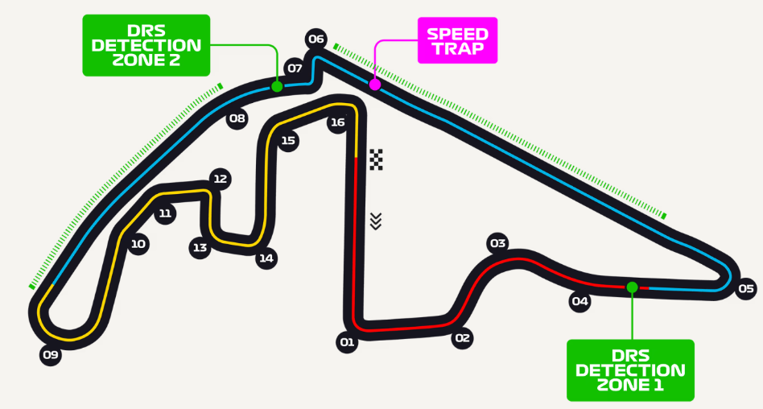

1) Silverstone Circuit

Circuit Length: 5.891 KM
No of Laps: 52
Lap Record: Max Verstappen
2) Imola Circuit

Circuit Length: 4.909 KM
No of Laps: 63
Lap Record: Lewis Hamilton
3) Yas Marina Circuit

Circuit Length: 5.281 KM
No of Laps: 58
Lap Record: Max Verstappen
4) Silverstone Circuit
Circuit Length: 5.891 KM
No of Laps: 52
Lap Record: Max Verstappen
5) Imola Circuit
Circuit Length: 4.909 KM
No of Laps: 63
Lap Record: Lewis Hamilton
6) Yas Marina Circuit
Circuit Length: 5.281 KM
No of Laps: 58
Lap Record: Max Verstappen